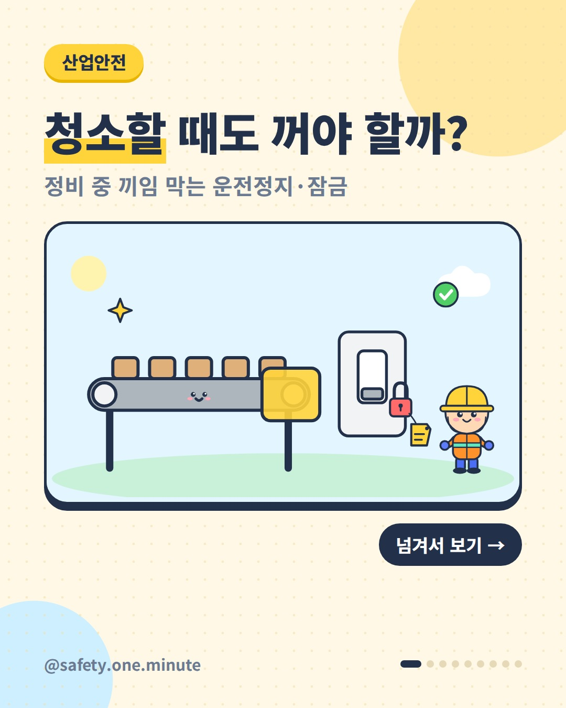
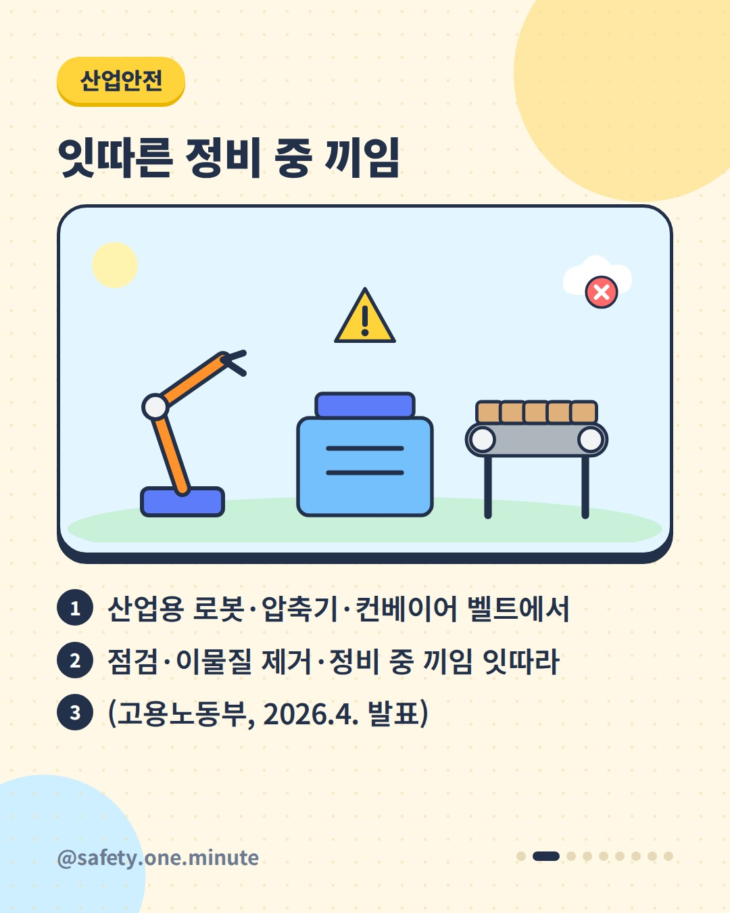
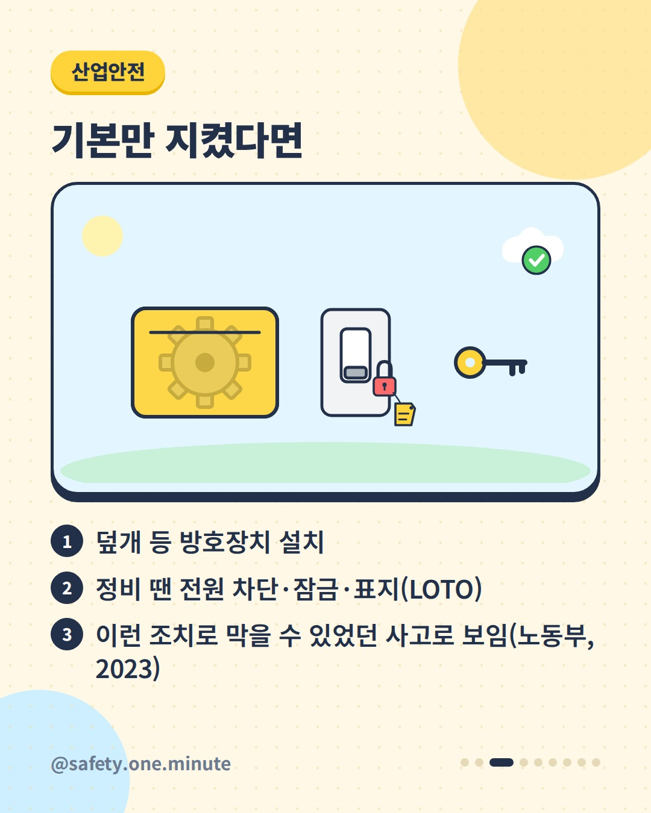
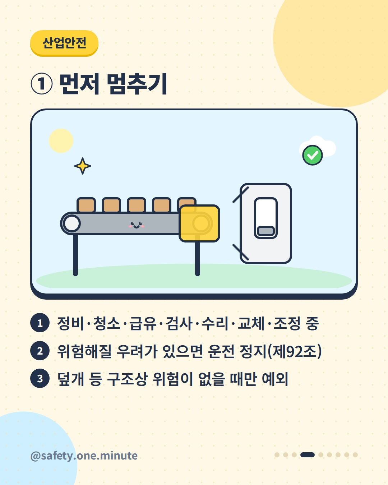
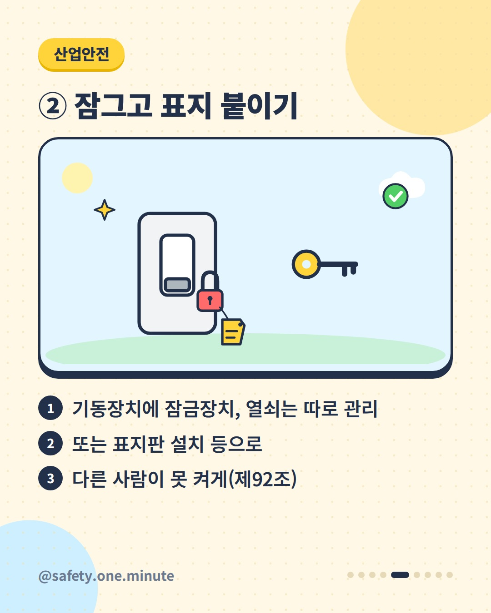
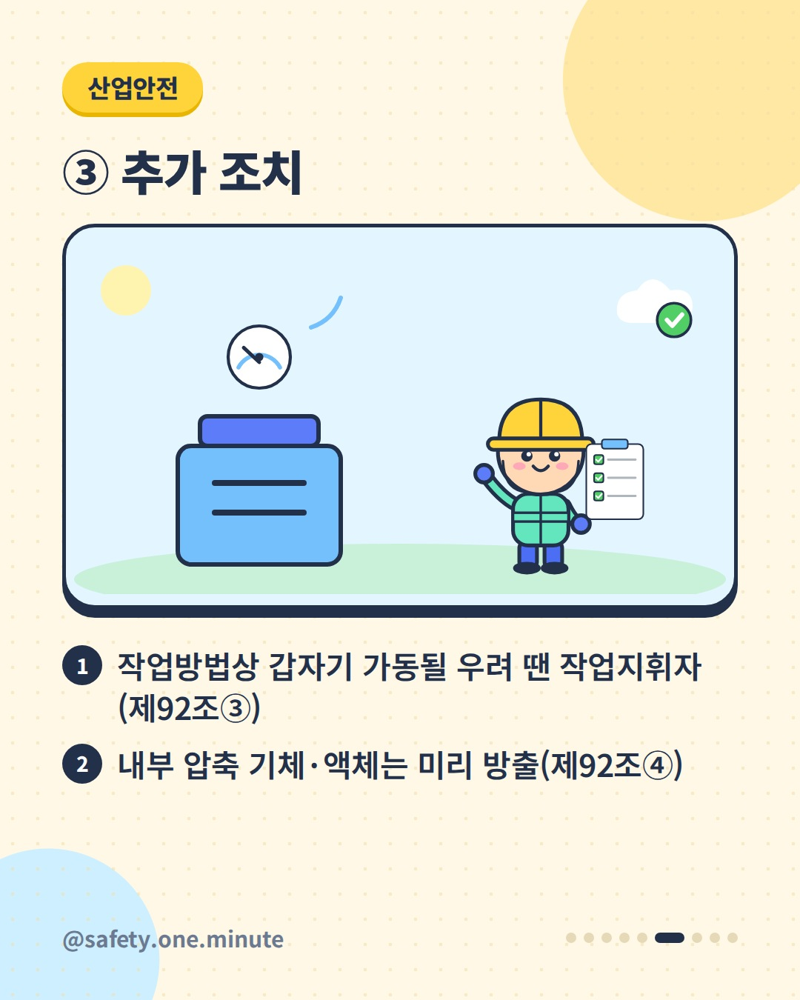
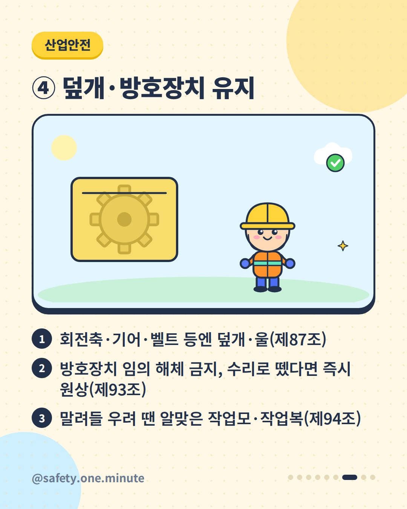
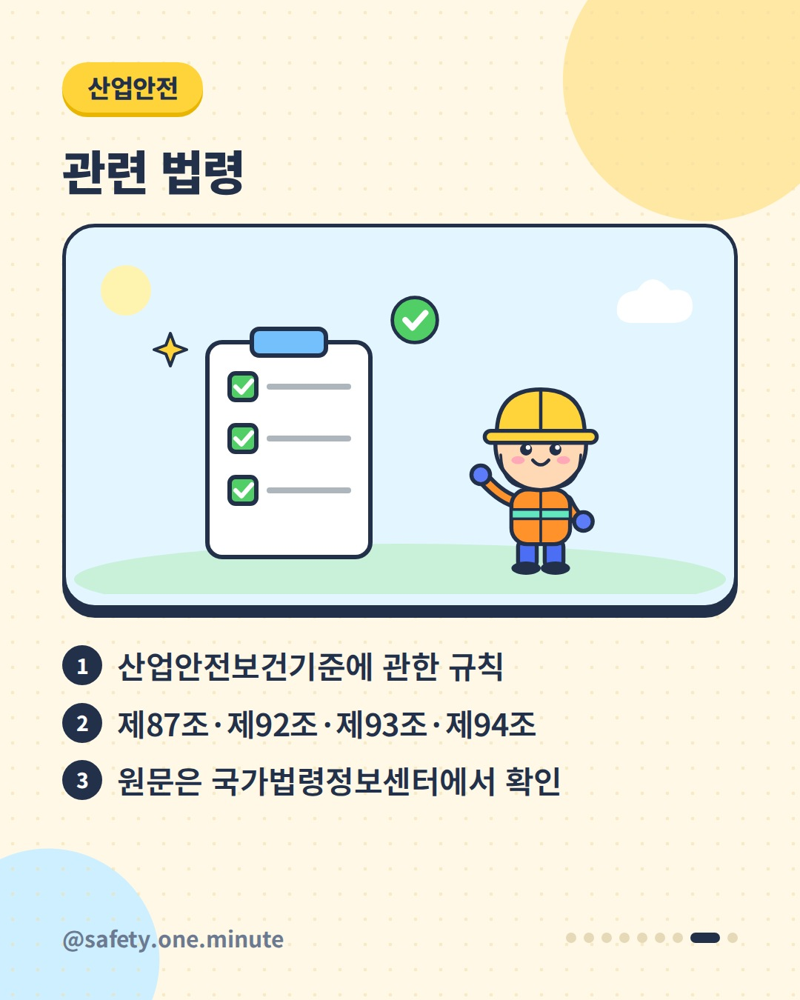
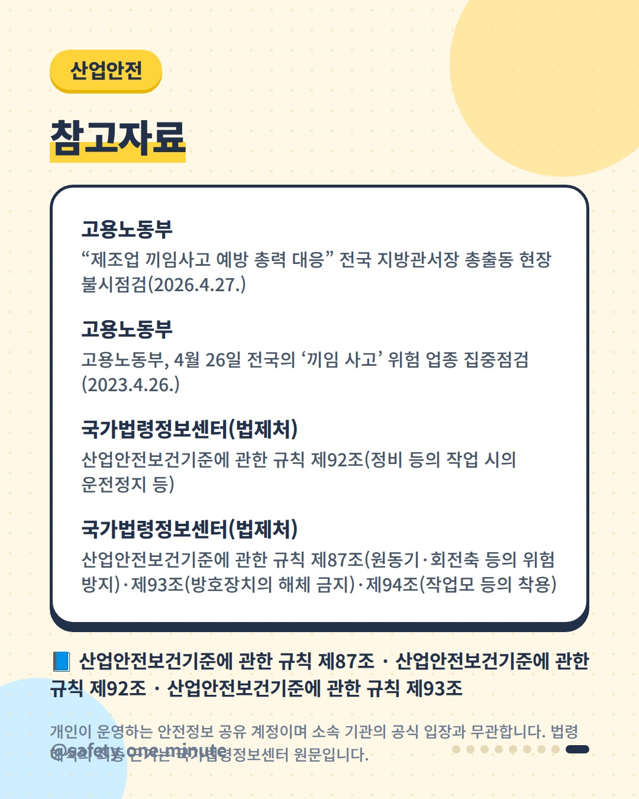

청소할 때도 꺼야 할까? — 9장 (4:5)









캡션
잠깐 이물질만 빼려는 거라면, 기계를 켜 둔 채 해도 될까요? 고용노동부에 따르면 올해 4월에도 점검 중 산업용 로봇, 이물질 제거 중 압축기, 정비 중 컨베이어 벨트에 끼이는 사고가 잇따랐습니다. 노동부는 정비·청소할 때 전원을 차단하는 것이 끼임사고를 막는 핵심 안전수칙이라고 강조했습니다(2026.4.). 2023년에도 노동부는 끼임 사망사고 사례들이 덮개 설치나 정비 중 운전정지(LOTO) 같은 기본 조치로 막을 수 있었던 것으로 보인다고 밝혔습니다. 산업안전보건기준에 관한 규칙은 이렇게 정하고 있습니다. ① 동력 기계의 정비·청소·급유·검사·수리·교체·조정 중 위험해질 우려가 있으면 운전 정지(덮개 등으로 구조상 위험이 없을 때만 예외)(제92조) ② 다른 사람이 켜지 못하게 기동장치 잠금·열쇠 별도 관리 또는 표지판 설치 등(제92조) ③ 작업방법상 기계가 갑자기 가동될 우려가 있으면 작업지휘자 배치, 내부 압축 기체·액체는 미리 방출(제92조) ④ 회전축·기어·벨트 등엔 덮개·울(제87조), 방호장치 임의 해체 금지·수리로 뗐다면 끝난 즉시 원상복구(제93조), 말려들 우려 땐 알맞은 작업모·작업복(제94조) ※ 세부 요건은 법령 원문(2025.9.1. 시행본 기준)을 확인하세요. 출처: - 고용노동부 – 제조업 끼임사고 예방 집중점검(2026), 끼임 사고 위험 업종 집중점검(2023) - 국가법령정보센터(법제처) – 산업안전보건기준에 관한 규칙 제87조·제92조~제94조 개인이 운영하는 안전정보 공유 계정이며 소속 기관의 공식 입장과 무관합니다. 법령 해석의 최종 근거는 국가법령정보센터 원문입니다. #끼임사고 #LOTO #운전정지 #정비작업 #산업안전 #제조업안전